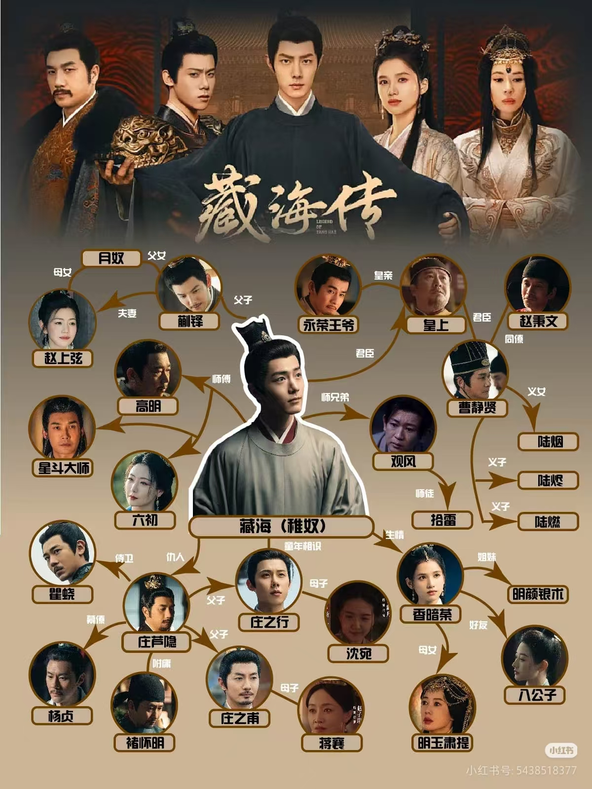

人物关系图

经典台词
1.风起于青萍之末，君子要谋时而动，顺势而为。你要复仇，就要学会风的变化莫测。
2.总有一天你会明白，这世上最厉害的本事，是用真话、实话来骗人。
3.聪明的人遍地都是，但真正聪明的人啊，一定是那种听话的。
4.谣言嘛，一阵风不就过去了。风会过去，但事不会。流言会留在人们心里，传着传着人们就会忘记在哪儿听到的这些消息，到最后都信以为真了。
5.利来利往，唯利而已。
6.金麟岂是池中物。
7.对一个人最大的报仇，就是摧毁他最大的希望。
8.每个人都有痛苦和迷惘，知易行难，要想获得他对你的依赖，就要为他排忧解难。
9.这一步步精准缜密，策无遗算。
10.大恩如大仇，没有人愿意背负你一生的恩情，长久无法偿还的恩情，最后不是变得心安理得就是变成了怨恨。
11.这天下间，通常都是自私的人，活得更加快乐。
12.痛苦越是隐藏，扎根越深，哪个强者愿意自己内心有这样的弱点呢。
13.狡兔死，走狗烹，飞鸟尽，良弓藏，哪怕你有千秋功绩，也抵不过帝王无情。
14.坐马车的是官，两条腿走路的也是官，习惯了坐那种马车，就懒得走路，再也下不来了。
15.只知道低头看地，不知道抬头看天，只怕是要撞墙了都不知道。
16.水至清则无鱼，人至察则无徒。
17.官场险恶，做事之前，先坐稳，想整顿吏治，必须先保护好自己。因为越高的位置，能做的事情越多，在确保你想做的事情一定能实现之前，先走到那个位置去。
18.一个人太有作为，就会成为另外一些人的眼中钉，肉中刺，遭人忌惮。
19.恨不用写在脸上，放在心里就好了。心是自己的，别人看不见,脸在外面，人人能见。
20.这世上最锋利的刀，是心甘情愿的信任。
21.欲加之罪，何患无辞。要毁掉一个女人，破坏她的贞洁是千百年来最行之有效的办法。
22.许多人终其一生追求的就是权力这个东西，一旦尝过了这样的滋味，就再也舍不得放下了。
23.原来一切，终究还是权力二字，千秋万代，权力不死。
24.水满则溢，月盈则缺，为官者，可不能忘了这个道理。
25.将欲取之，必先与之。
26.只要感情是真的，有时候谎言，未见得是坏事。
27.如果事事都指望后人，那后人的日子只会一天不如一天。
28.不要因为感情而相信他人，那样只会让自己失望。
29.知天意，逆天难，很多时候就算我们知道会发生什么，也还是无法阻挡。
30.片片乾飞已足悲，况堪风雨横相欺。卒然此恨何由释，倚赖重开有背枝。